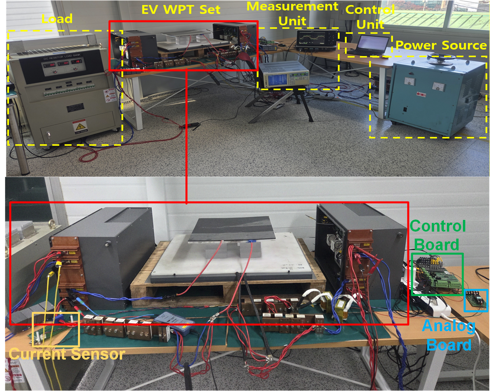
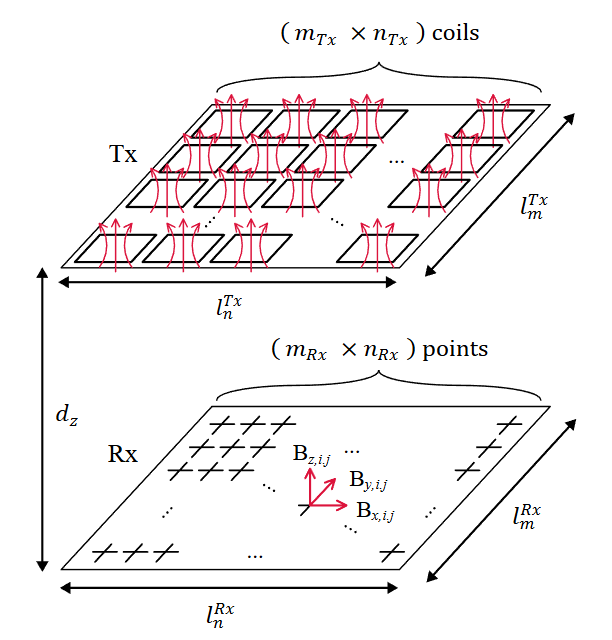
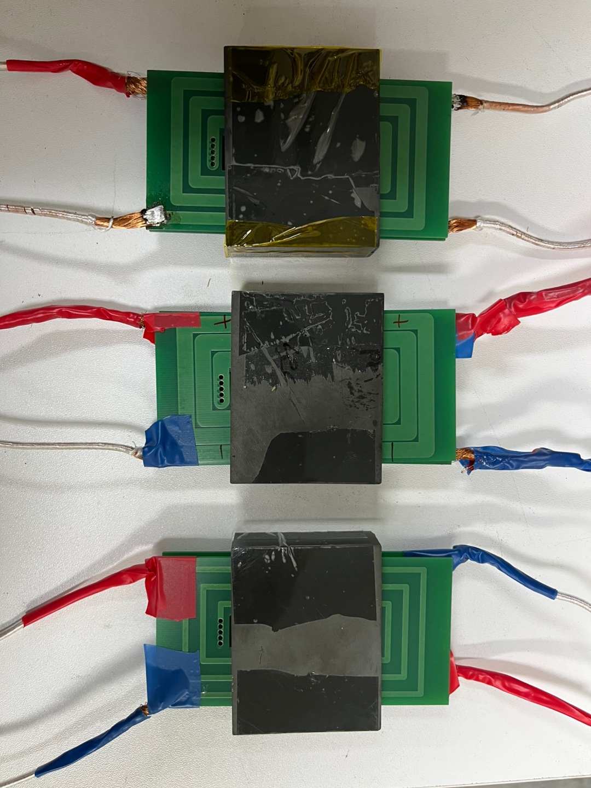
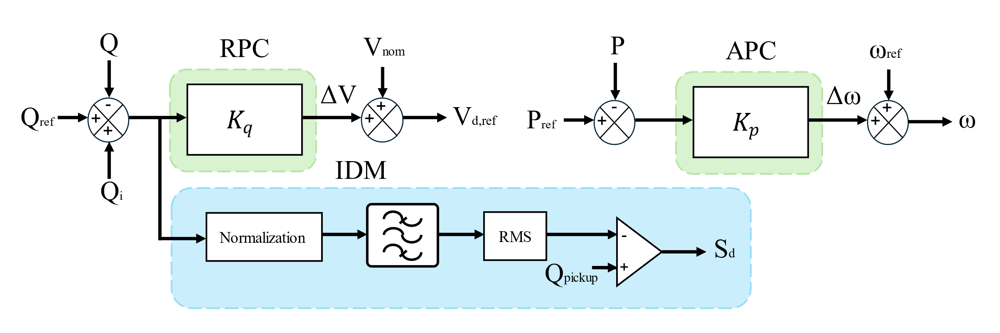
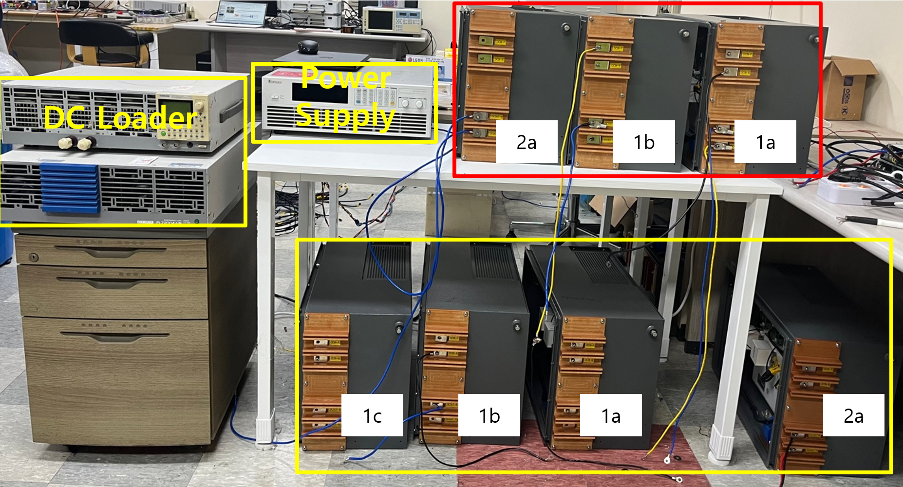
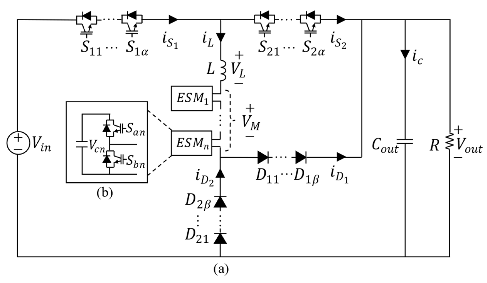

Research

Impedance-transforming synchronous rectifier for EV
Impedance-transforming synchronous rectifier enabling single-stage output power control for LCC-resonant EV wireless charging receivers.

Machine Learning Based Magnetic Field Focusing
Implementing magnetic field focusing in three-dimensional space using machine learning.

Optimal Planar Transformer Design Based on Reinforcement Learning
Finding optimal planar transformer design using reinforcement learning.

Grid-Forming Inverter Islanding Detection Method
Developing a grid-forming inverter islanding detection method by reactive power injection.

MVDC/MVAC Converter Station
MVDC/MVAC Converter station for railway system. Comparative analysis of AC/DC and DC/DC converter stations.

Non-Isolated Modular Multilevel Converter
A non-isolated step-down (NISD) DC transformer based on discontinuous conduction mode (DCM).